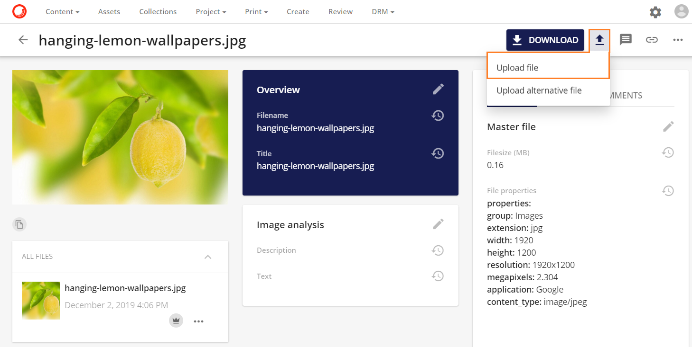
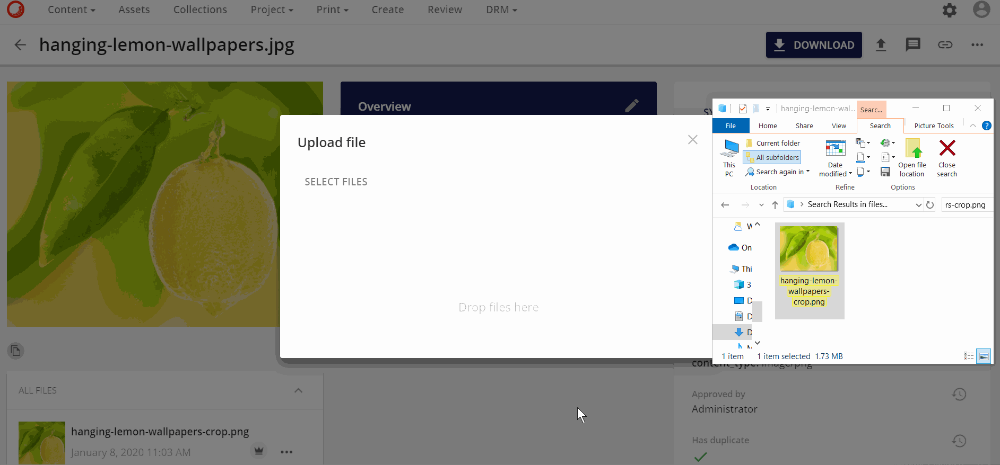
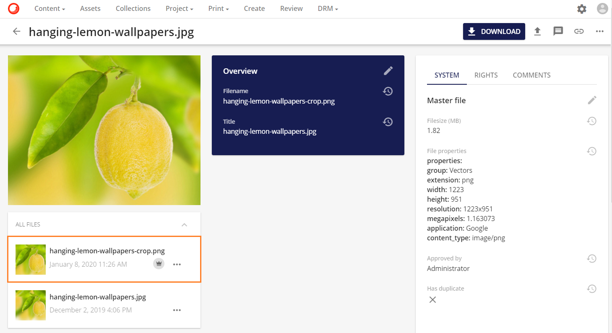
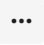
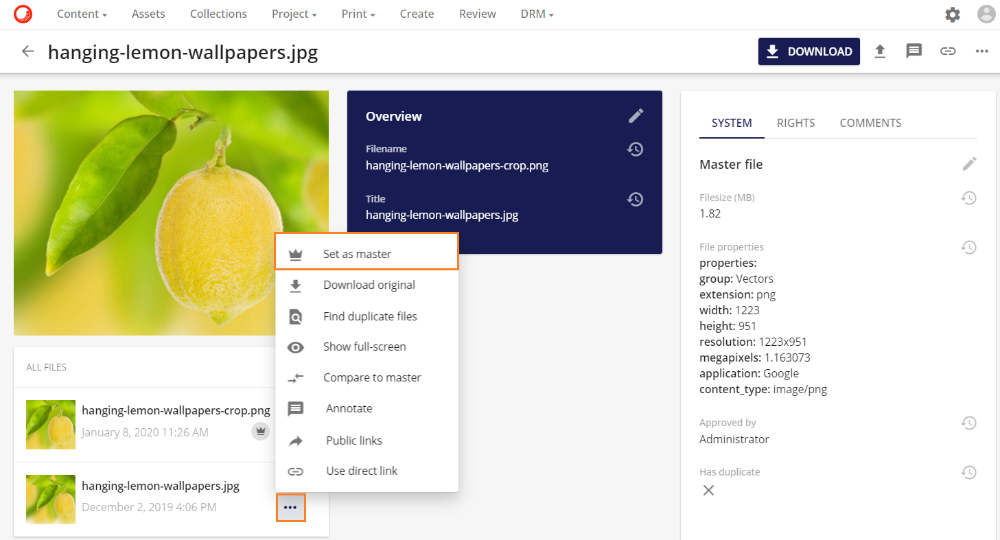
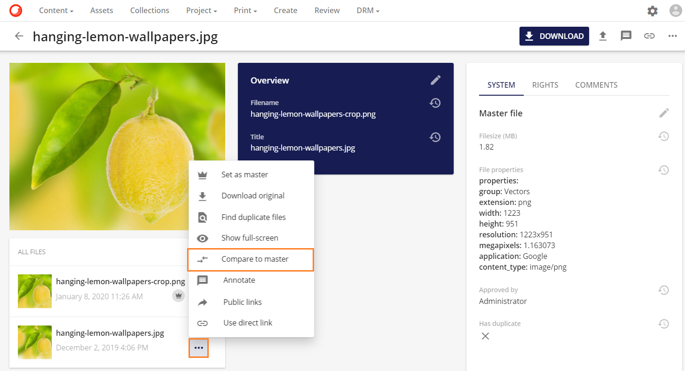

アップロードファイル
アップロードファイルは、選択したアセットの新しいバージョンをアップロードすることができます。
アップロードファイルは、アセット詳細ページの右上の操作メニューにあるアップロードアイコン  のボタンアイコンの下に表示されます。
のボタンアイコンの下に表示されます。

ファイルの選択を開始するには、ファイルの選択オプションをクリックします。

アップロードするファイルに移動し、開くをクリックします。続いてファイルがアップロードされます。

または、選択したファイルを「ファイルの選択」にドラッグ＆ドロップしてアップロードします。

アップロードが完了すると、アップロードされたファイルがマスター  として設定されます。このプロセスは、アセットの新しいバージョンに合わせて新しいレンディションが作成されるため、1分程度かかる場合があります。
として設定されます。このプロセスは、アセットの新しいバージョンに合わせて新しいレンディションが作成されるため、1分程度かかる場合があります。

アセットファイルのバージョン
アセットが複数のバージョンのファイルを持つと、いくつかのオプションがあります。バージョニングの詳細については、バージョニングを参照してください。
マスターとして設定する
以前にアップロードしたファイルをアセットのマスターとして設定する場合は、アイコンをクリックすると、選択したファイルをマスターとして設定するオプションを含む様々な操作が表示されます。

マスターと比較する
任意のファイルバージョンをマスターファイルのバージョンと比較するオプションがあります。

マスターと比較オプションは、左側にマスターバージョンが表示され、右側に選択されたバージョンが表示された新しいモーダルを開きます。どちらかのバージョンをより多く表示できるように、差分を表示するスライダーボタンがあります。

Note
アップロードファイルと代替サムネイルのアップロードの違いにご注意ください。
- ファイルをアップロードする場合は、アセットのマスターファイルバージョンとして設定されているアセットの新しいファイルバージョンをアップロードします。
- 代替サムネイルのアップロードは、アセットのマスターファイルのバージョンに合わせた新しいサムネイルのみをアップロードします。代替サムネイルのアップロードの詳細は以下の通りです。